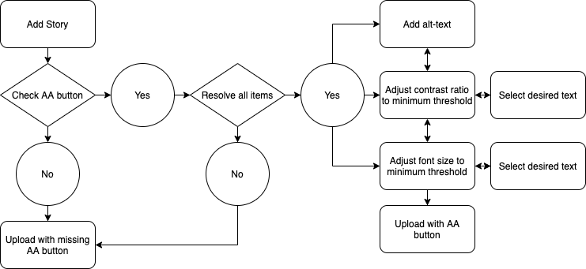
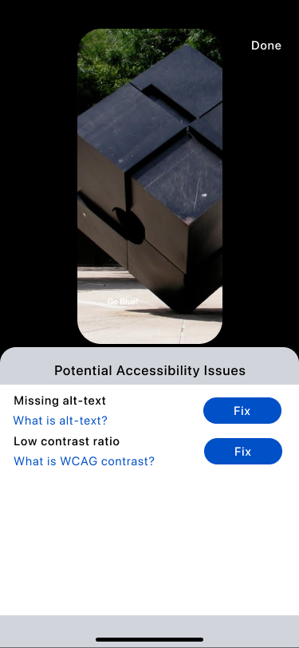
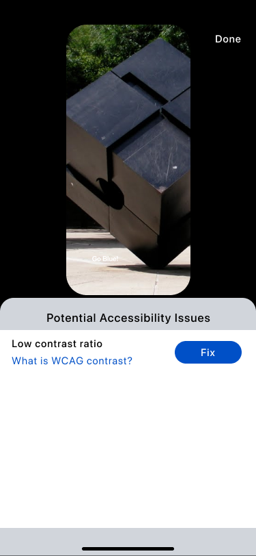

Problem: Stories on social media platforms such as, Instagram, Linkedin, WhatsApp and Snapchat, aren’t accessible due to the inability and lack of awareness to empower content creators through an easy manner in developing accessible content that is within the standardized guidelines.
Solution: We designed an accessibility audit button that complies with WCAG 2.0 guidelines to validate contrast ratios and incorporating alt-text to Stories.
My Contribution: I led the entire design phase.
The implementation of Stories as a content structure has been on a steady rise across various social media platforms as seen with the insurgence on Instagram, LinkedIn, WhatsApp and Snapchat. Our proposed project topic began as understanding issues that user that are visually impaired or with low vision face when interacting with Stories.
Our team conducted a literature review of 5 scholarly papers and web articles relating to ability-based design, assistive technology, and low vision and vision impairment. We collectively grouped our users instead of separating and categorizing based on the different levels of impairments as that took the standpoint of the medical model of disability which may not exactly describe the identity of a person with impairment.
Users are able to navigate on social media platforms through desktop computers or mobile devices with the help of assistive technologies. Among the top assistive technologies (AT) utilized within the groups were:
-
Screen readers.
-
Screen magnification programs.
-
Adjustable contrast programs.
We discovered that there is a large population that would completely avoid Stories due to the lack of accessibility even with the use of assistive technology.
We conducted a qualitative analysis to better understand the various pain points of users on a deeper level and concluded that.
-
The increase in popularity of photos have started making content inaccessible due to the lack of alt-text and not AT readable.*
-
Text that are superimposed onto images can lack proper contrast.
*Twitter was the only platform at the time of research that allowed alt text on Stories.
From this we started scoping our problem based on what we could tackle within the limitations of our course and concluded:
Stories aren’t accessible due to the inability and lack of awareness to empower content creators through an easy manner in developing accessible content that is within the standardized guidelines.
We believe the process of generating accessible content through Stories can be a more intuitive and equitable experience for visually impaired and low vision users. Utilizing WCAG’s principles we apply that relates directly to our user group:
-
1.1 Text Alternatives: Provide text alternatives for any non-text content.
-
1.4 Distinguishable: Make it easier for users to see and hear content including separating foreground from background.
-
2.5 Input Modalities: Make it easier for users to operate functionality through various inputs beyond keyboard.
-
3.3 Input Assistance: Help users avoid and correct mistakes.
Based on our key takeaways from the research phase, we decided to design an edit button that would assist in developing accessible Stories but would not interfere unless prompted to. I decided to map out our task flow in order to assist us in building the interactions.

For our design, I selected Instagram as an example to build on due to its popularity in comparison to the other platforms. That being said, all the aspects of our design can be translated onto other platforms that utilize Stories.
Once a user captures an image, all platforms, including Instagram, have the ability to start editing the posts by either adding filters or text over the image. At any point of time prior to submitting the post, the user has the ability to utilize the accessibility button which audits any potential accessibility issues that might occur. The design for the accessibility button is unique in which it follows an outer white circle, middle black circle, white inner circle, and a black illustration that symbolizes accessibility. The layering contrast of this button allows it to be seen in the most extreme background contrast, unlike Instagram, which utilizes drop shadows and transparent properties for negative space. Adding an accessibility audit button allows us to leverage the network affect to spreads awareness as a way of social signaling.
In my first iteration, I approached the problem in which each issue would disappear after being resolved, allowing the user to move on to the next problem that required attention. However, I realized during testing that users might want to go back and edit what they added.



Moving forward, I added the adjustment of buttons that stated whether an issue was solved or was missing and color coordinated through different contrasts to visually signal to users what required their attention. Continuing from the first iteration, whenever either issue popups, links are provided underneath the messages, educating the user to what they mean in order to spread awareness.
If a user selects fixing the alt text, they're taken to a screen in which they solve the issue by describing their Story in less than 1000 characters.
For resolving contrast ratios and font size, we utilized WCAG 2.0 guidelines to ensure accessibility. Users are taken into a secondary screen that show potential issues with each text added. In order to ease the decision making process for the user, we added a recommendation system based on the most favorable from the WCAG calculation, however, users do have the ability to further customize their colors and font size to avoid artistic limitation.
In the further customization process, we show users whether their changes meet the guidelines by explicitly stating if it passes or fails, as well as a preview of what it looks like.
Once saved, users can post their content as usual. The Story itself has an accessibility badge signifying to other users that their post is accessible, which links to an information page explaining what type of accessibility issues users typically face as a way of educating and spreading awareness when clicked on.
I then created digital prototype by combining all the screen and interactions in Figma to yield more realistic experience. From high-level features to granular design elements, I tested and refined the design iteratively to achieve a final design that is easy-to-use and caters to the needs of the target users.
If I had to analyze the impact to gauge the success of the design I would look into:
-
Adoption from new users who previously didn’t interact with Stories, or users that utilize AT.
-
Retention which would ensure the design has utility and is easy to use.
-
Difference between expected output and actual output.
Participatory design is the most thorough method to design for stakeholder needs. Although we could not incorporate this method due to time constraints, our design was purely user-informed based on qualitative findings. For future steps I would focus on incorporating videos within Stories accessible within the next iteration.
Thank you for taking the time to read through this case study! As a token of my appreciation, here's a little reward :)